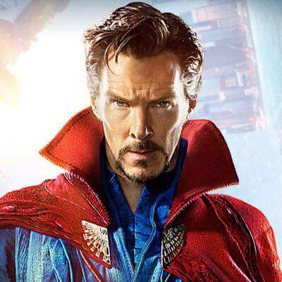

 Доктор Стівен Вінсент Стрендж (англ. Doctor Stephen Vincent Strange), більш відомий як Доктор Стрендж (англ. Doctor Strange) — персонаж коміксів видавництва Marvel Comics; супергерой, який володіє магічними силами. У минулому Стівен Стрендж був нейрохірургом, та наразі є Верховним Магом Землі, основним захисником планети від містичних загроз. Дебютував у Срібній Добі коміксів та мав власну серію коміксів. Перша поява Доктора Стренджа не в коміксах відбулась у телевізійному фільмі «Доктор Стрендж» (1978 року), який не мав успіху у прихильників коміксу та був негативно зустрінутий критиками, через це всі плани на повноцінний серіал про персонажа провалились. Після цього Стрендж з'являвся в різних мультсеріалах, заснованих на Marvel Comics. В однойменному фільмі 2016 року у рамках Кінематографічного всесвіту MarveI роль Стівена Стренджа виконав британський актор театру і кіно Бенедикт Камбербетч.
Наступні 7 років Стрендж займається вивченням магії, часто допомагаючи своєму вчителеві в боротьбі з демоном та чаклуном Дормамму, який намагається вирватися зі свого виміру, щоб поглинути енергію життя Землі. Досягти своєї мети Дормамму допомагав барон Мордо. Після навчання, Стівен повернувся в Нью-Йорк Магістром Містичних Наук, але найголовніше, що він став найсильнішим магом Землі. І повернувся він не один, у Стренджа з'явився слуга на ім'я Вонг (він був членом лінії сімейства, службовця Магістрів Містичних Наук) і учениця Клеа (згодом вона стала дружиною Доктора). У Нью-Йорку Доктор Стрендж з помічниками починають боротьбу проти темних сил. Зазвичай Стрендж постає нам як мудрий, сильний, справедливий маг. Доктор Стрендж захищає світ від усього потойбічного, вважається одною з найсильніших істот в світі (враховуючи всі види життя). Так в класичній серії він навіть вступав в команду Іллюмінатів, в якій разом з ним знаходилися такі найбільші супергерої, як Немор-підводник (король Атлантиди), Чорний Грім (король Нелюдей), професор Чарльз Ксавьє (лідер Людей Ікс), Рід Річардс (лідер фантастичної четвірки) і Тоні Старк (один із засновників Месників). Стрендж часто допомагав іншим героям, а також брав участь в великих подіях. Також у доктора загострене почуття справедливості, він завжди тверезо оцінює ситуацію і розуміє, хто правий. Так за часів війни супергероїв (введення реєстрації супергероїв) Стрендж прийняв нейтральну сторону і навіть відмовився від їжі та інших благ до закінчення війни, розуміючи, що правих в ній немає.